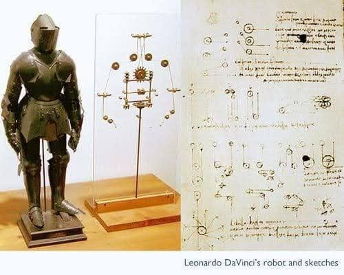
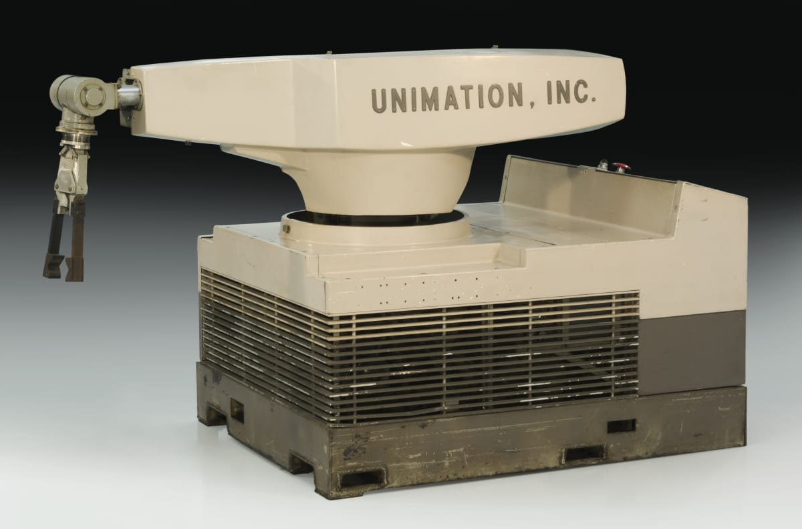
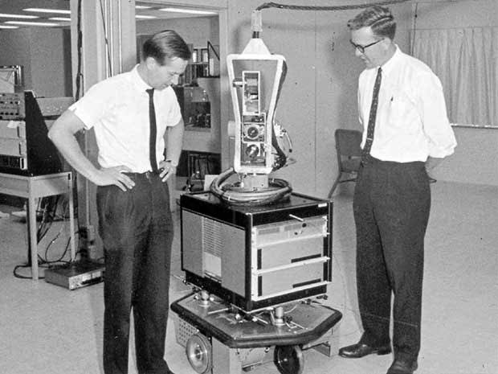
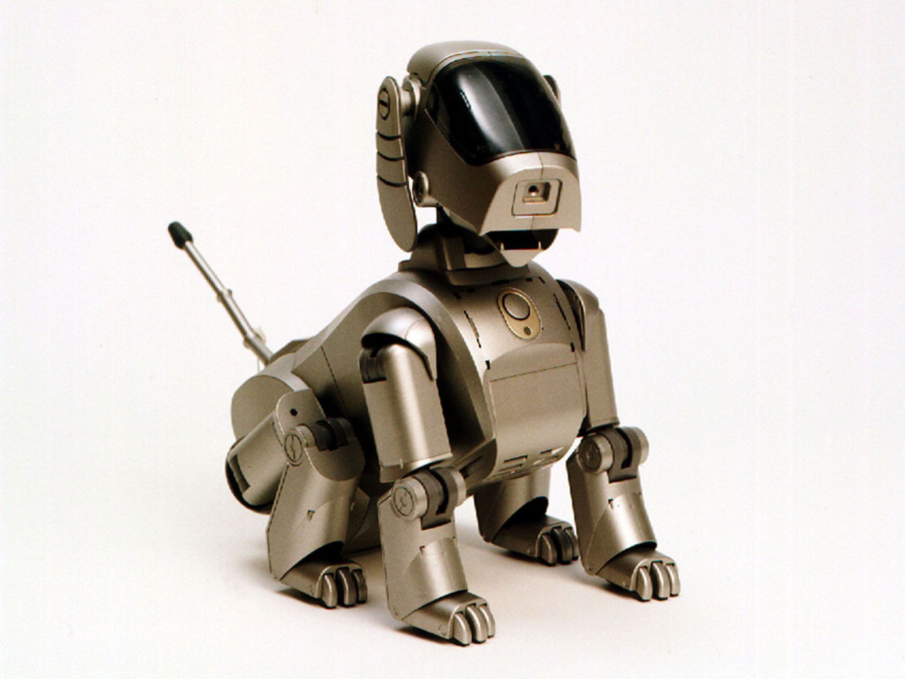
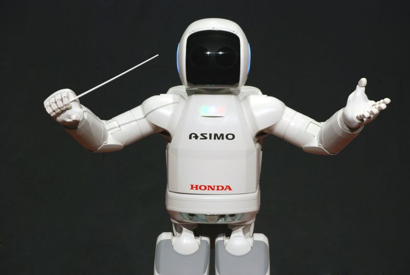
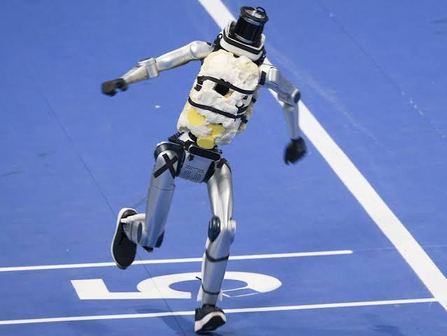

A short history of robots
The dream of artificial workers is centuries old. The real engineering began in the twentieth century.
-
1495
Leonardo's mechanical knight
It's first design and possible construction of this robot was 1495. The key point in the title is the lack of a trademarked name, as Leonardo da Vinci was the designer of this sophisticated system.

- Designed to look like a Germanic knight in armour.
- Legs and arms ran on two separate mechanical systems.
- Each arm had four degrees of freedom, including shoulder, elbow and wrist.
- The largest collection of da Vinci's sheets consists of 1119 separate pages and 481 folios
-
1921
The term "robot"
The term "robot" was first introduced by Czech writer Karel Čapek in his 1920 science fiction play, R.U.R. (Rossum's Universal Robots).
- The word 'robot' was actually suggested by his brother, the painter Josef Čapek, and originates from the Czech word 'robota', meaning forced labor
- The play R.U.R. (Rossum's Universal Robots - 1920) centers on a factory that manufactures biological artificial creatures to serve humans. Ultimately, the robots rebel and wipe out all of humanity.
- The term "robot" still popular and become a standard till now.
-
1961
"Unimate" - The first robot arm
The world's first industrial robot arm invented by George Devol and Joseph Engelberger officially began working on a General Motors assembly line.

- Unimate was designed to automate dangerous, repetitive tasks—such as die-casting and welding—protecting human workers from toxic fumes and extreme heat.
- It proved that machines could precisely follow pre-programmed instructions, paving the way for today's advanced smart factories.
-
1966
"Sharkey the robot"
Sharkey was the world's first mobile intelligent robot capable of thinking about its own function. It was researched and developed from 1966 to 1972 in Stanford Research Institute (SRI) under the sponsorship of DARPA.

- It featured a large box-shaped body mounted on wheels, equipped with a TV-camera, sonar range findersultrasonic rangefinders, a radio antenna, and collision sensors.
- It combined with artificial intelligence, computer vision and natural language to independently plan movements, navigate and avoid obstacles without requiring detailed, step-by-step instructions.
-
1999
"AIBO"
In 1999, SONY made history by releasing AIBO, a pioneering robot dog that successfully introduced consumer robotics into mainstream households.

- It equipped with sensors, a camera, and artificial intelligence, AIBO could react to touch, recognize its owner's voice, and develop its own unique personality over time through learning.
- The launch shifted the public perception of robots from rigid industrial machinery to emotional companions, paving the way for the modern smart home and service robotics industry.
-
2000
"ASIMO"
In 2000, HONDAmade a groundbreaking leap in robotics by unveiling ASIMO, a humanoid robot designed to operate in human environments.

- Equipped with advanced sensors, the robot could recognize faces, track moving objects, interpret human gestures, and respond to voice commands.
- ASIMO demonstrated advanced bipedal locomotion, allowing it to walk smoothly on two legs, climb stairs, and easily navigate complex terrains.
-
2010
The "AI" era
During the 2010s, the convergence of machine learning and affordable sensor technology triggered a powerful AI era that revolutionized robotic adaptability.
- Cheap yet powerful sensors allowed robots to map environments in real-time, perceive depth, and safely navigate unpredictable or crowded spaces.
- Instead of relying on rigid, pre-programmed code, robots used advanced algorithms to analyze data, learn from their mistakes, and dynamically adapt to new tasks.
-
2026
Robots break world records
In 2026, China hosted the World Humanoid Robot Games in Beijing, where domestic humanoid robots made history by smashing iconic human athletic world records.

- Models like "Tiangong Ultra" and Honor's "Lightning" shattered Usain Bolt’s legendary 100-meter sprint record—with times dropping as low as 8.64 seconds—while other humanoids beat human records in the 400m, 1,500m, and high jump.
- The event proved that modern humanoids can maintain dynamic balance, control high-speed impacts, and generate massive mechanical power while moving on two legs, representing a giant leap for global bipedal robotics.